Getting started with the swift python package¶
About this document¶
This is a minimal but realistic simulation workflow for swift. It was ported from an original vignette in the R package swift. The python package swift2 is, as of August 2023, at least at feature parity with the long established R package.
This is the introduction 'notebook' to a python package for interacting with SWIFT. It shows one of the most basic usage, running a single model simulation. While basic, it is realistic and uses data from a study catchment.
from swift2.doc_helper import pkg_versions_info
print(pkg_versions_info("This document was generated from a jupyter notebook"))
This document was generated from a jupyter notebook on 2025-03-27 17:24:44.897481
swift2 2.5.1
uchronia 2.6.2
Prerequisites¶
This notebook requires a working Python environment, e.g. a conda environment. See the Streamflow Forecasting landing page for information about installing the software.
Imports¶
Finally we import some visualisation facilities
Some dependencies of swift2, namely cinterop, offer generic functions for time series manipulations. While these could be imported via swift2 as well, let's be explicit for now:
from cinterop.timeseries import (
TIME_DIMNAME,
as_timestamp,
pd_series_to_xr_series,
slice_xr_time_series,
xr_ts_end,
xr_ts_start,
)
from swift2.doc_helper import get_free_params, sample_series
from swift2.parameteriser import (
create_parameter_sampler,
create_parameteriser,
create_sce_termination_wila,
get_default_sce_parameters,
)
from swift2.simulation import create_subarea_simulation
We import the main functions upfront from the package submodules. In practice this is something you may need to do only on an as needed basis of course. Jupyter notebooks can show dynanically submodules and functions listed, along with some documentation. A searchable technical documentation for the package is available from Python swift2 documentation.
Lumped catchment data, daily data¶
The package contains some sample data for a few Australian catchments. Note that these sample data are for documentation only and not to be used for real world applications.
swift now has some functions to create a single subarea simulation for testing purposes, including the function create_subarea_simulation. While is it perfectly possible to manually build your own model simulation from scratch, for the sake of getting started quickly let's use pre-defined functions to get a model simulation ready to run. The parameters of the function should be fairly self-explanatory. But in general you can see function documentation with commands appended with the ? string, e.g. create_subarea_simulation?. You can also browse the Python swift2 documentation.
ms = create_subarea_simulation(data_id='MMH', simul_start='1990-01-01', simul_end='2005-12-31',
model_id='GR4J', tstep='daily', varname_rain='P', varname_pet='E')
Simulation wrapper for a CFFI pointer handle to a native pointer of type id "MODEL_SIMULATION_PTR"
swift2.classes.Simulation
The python object ms may appear unusual to most users. This is basically a handle to the SWIFT simulation object written in C++. The model core is native, but wrapped by a "pythonic" Simulation object. The low-level interaction between python and the C API is handled by "glue code" and users will rarely if ever need to use the low-level API.
The Simulation object has python methods to interact with it, for instance:
{'subareas': {'Subarea': 'Subarea'}, 'nodes': {}, 'links': {}}
Because we got a preconfigured, sample simulation, it is ready to execute, which means it already has some input data defined (a site with a codename 'MMH'). The SWIFT system uses the terms playing from and recording to time series, using an old style audio tape system as a metaphor. We can inspect the simulation for instance using get_played_varnames to check which state variable has an input time series:
['subarea.Subarea.E', 'subarea.Subarea.P']
Time series data representation¶
Let us have a look at these input time series to the simulation:
<xarray.DataArray (variable_identifiers: 2, ensemble: 1, time: 5844)> Size: 94kB
array([[[5.5422, 5.5522, 5.5622, ..., 6.0744, 6.0735, 6.0725]],
[[0. , 0. , 0. , ..., 2.1569, 0. , 0. ]]],
shape=(2, 1, 5844))
Coordinates:
* ensemble (ensemble) int64 8B 0
* time (time) datetime64[ns] 47kB 1990-01-01 ... 2005-12-31
* variable_identifiers (variable_identifiers) object 16B 'subarea.Subarea....The C++ core has its own internal representation of time series. The Python package swift2 uses generally xarray to represent time series, as it is particularly suited to handle ensemble of time series of dimensionality more than 2. The ensemble dimension is thus present by default in the returned array, even when there is only one realisation. This can be removed with the squeeze method of xarray.
tts = tts.squeeze(drop=True)
g = tts.plot.line(add_legend=True, figsize=(16,8), col="variable_identifiers", col_wrap=1, sharey=False)
g;
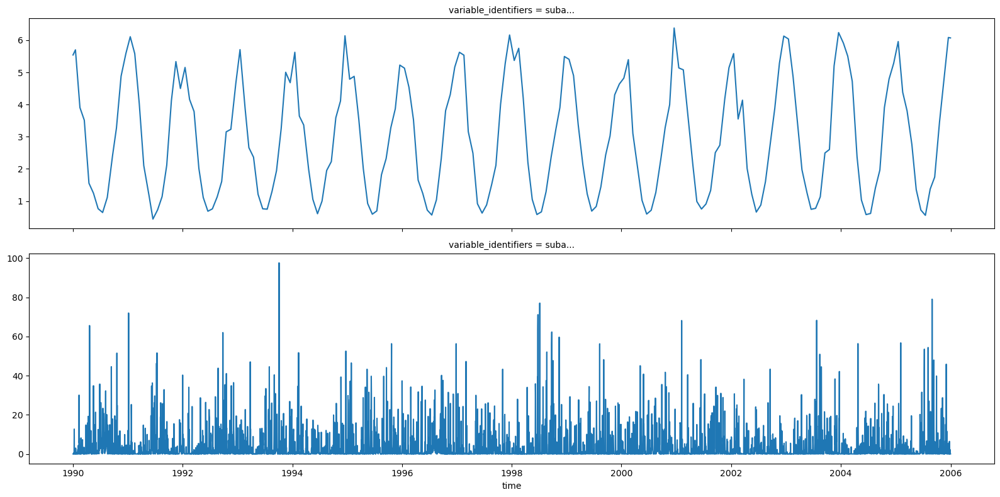
Many swift2 python functions will however also accept pandas DataFrame or Series as input for time series when it makes sense to accept such time series representations.
We can check with the get_recorded_varnames method that simulation object as not been "told" to record an output time series yet.
[]
SWIFT is designed to record model variables on demand in a highly flexible manner. First, we can query the system to find out known rainfall-runoff models, and the model variable names that we can record.
['NetRainfall',
'GR2M_MOD',
'GR4J',
'GR4J_SG',
'GR5H',
'GR6J',
'GR5J',
'PDM',
'AWBM',
'SACSMA',
'SACSMA_NSW',
'constant_outflow',
'external',
'WAPABA',
'GRKAL',
'SimHyd',
'HBV']
The GR4J model has the following states that can be "listened to" and "recorded" on demand over a simulation.
['P', 'E', 'En', 'LAI', 'runoff', 'S', 'R', 'TWS', 'Eactual', 'Ps', 'Es', 'Pr', 'ech1', 'ech2', 'Perc', 'alpha', 'k', 'x1', 'x2', 'x3', 'x4', 'UHExponent', 'PercFactor']
These are the variable names for a single GR4J model instance; since SWIFT is for semi-distributed models, we need to use a hierarchical naming scheme to uniquely identify model variables (even when in this case we do have only one subarea). Using unique keys allow to inspect the model states in great details if needed.
{'subarea.Subarea.x4': 0.5}
Let's record to time series all the storage and flux states of GR4J (no need to record model parameters which will be flat lines here). We can use the utility function mk_full_data_id for conciseness to vectorise the handling of multiple state identifiers.
to_record = ['runoff', 'S', 'R', 'Ps', 'Es', 'Pr', 'ech1', 'ech2', 'Perc']
ids = mk_full_data_id('subarea', 'Subarea', to_record)
['subarea.Subarea.Es',
'subarea.Subarea.Perc',
'subarea.Subarea.Pr',
'subarea.Subarea.Ps',
'subarea.Subarea.R',
'subarea.Subarea.S',
'subarea.Subarea.ech1',
'subarea.Subarea.ech2',
'subarea.Subarea.runoff']
Model execution¶
ms was configured to record model outputs, now we can execute the simulation, with its parameters set to whatever defaults it has. Note that ms also has a check_simulation method that can provide information about obvious configuration issues when execution fails. Typically inconstent start and end dates between simulation and input time series. In this case, nothing is reported in this simple and preconfigured case.
{'errors': []}
Model outputs¶
We have a 3 dimensional data array, with 9 identifiers for state variables:
(('variable_identifiers', 'ensemble', 'time'), (9, 1, 5844))
array(['subarea.Subarea.Es', 'subarea.Subarea.Perc', 'subarea.Subarea.Pr',
'subarea.Subarea.Ps', 'subarea.Subarea.R', 'subarea.Subarea.S',
'subarea.Subarea.ech1', 'subarea.Subarea.ech2',
'subarea.Subarea.runoff'], dtype=object)
The variable identifiers are fully qualified, which is fine and certainly make a lot of sense for semi-distributed catchments. But to visualise these for a single subarea we shall override with short model names:
var_series.coords['variable_identifiers'] = np.array([x.replace('subarea.Subarea.', "") for x in var_coords])
Visualising model states¶
Let's look at a shorter period of the output. We define a couple of functions to slice and plot the last three years of the time series, for clarity.
def last_three_years(tts:xr.DataArray):
start=tts.coords[TIME_DIMNAME].values[-(365*3)]
end=tts.coords[TIME_DIMNAME].values[-1]
return slice_xr_time_series(tts, start, end)
def plot_obs_vs_calc(obs, calc, ylab="runoff (mm)"):
import uchronia.utils as uu
obs = last_three_years(obs)
calc = last_three_years(calc)
both = uu.xr_concat([obs,calc], ['observed','calculated'], 'type')
both.plot.line(add_legend=True, figsize=(9,4), hue="type")
plt.ylabel(ylab)
g = s.plot.line(add_legend=True, figsize=(16,16), col="variable_identifiers", col_wrap=2, sharey=False)
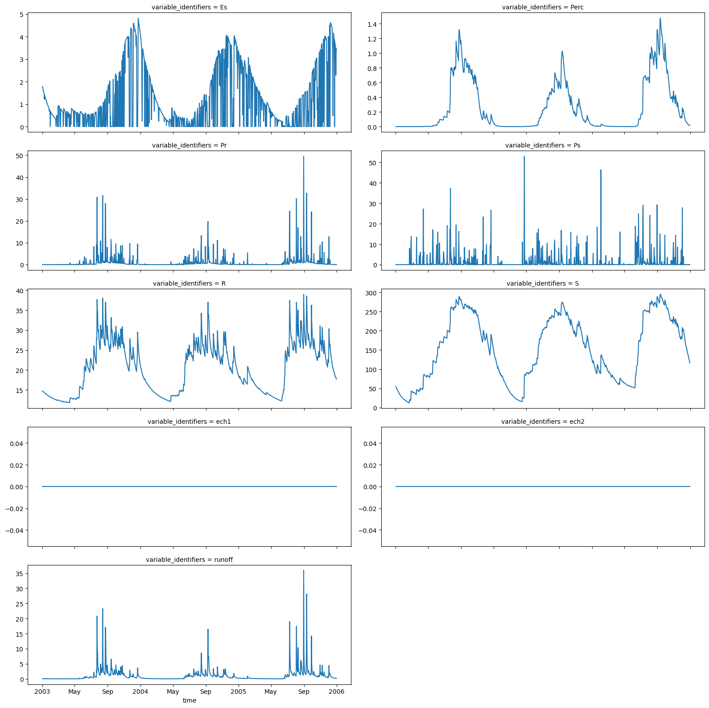
Exploring the model interactively¶
Assessing a change in the input series¶
As mentioned earlier, it is change to define the model simulation definition directly and interactively. The following shows how a to assign another input time series. We use a somewhat contrived example of a scaled up precipitation input series, to see what is the effect on the runoff.
precip_id = 'subarea.Subarea.P'
runoff_id = 'subarea.Subarea.runoff'
precip = ms.get_played(precip_id)
baseline_runoff = ms.get_recorded(runoff_id)
Because we are about to work on a scenario, rather than modifying ms we are going to keep it as a clean baseline, and create a full "clone" of the catchment model. This is an understated feature of swift2, but a cornerstone of proper scenario comparison (and help limit modelling mistakes)
precip_scaled = precip * 1.1
precip_scaled = precip_scaled.squeeze(drop=True)
ms_wetter.play_input(precip_scaled, precip_id)
ms_wetter.exec_simulation()
runoff_diff = ms_wetter.get_recorded(runoff_id) - baseline_runoff
The additional runoff depth we get with a rainfall scaled up by 10 percent is:
runoff_diff.plot(figsize=(9,4))
plt.title('Change in runoff with precipitations scaled up by 10%')
plt.ylabel('runoff depth change (mm/day)');
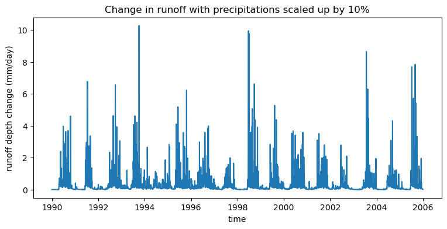
Assessing the impact of a change in one model parameter¶
{'subarea.Subarea.x4': 0.5}
The returned value for \(x_4\) is in a dictionary, because get_state_value is vectorised and can retrieve several state values at the same time. set_state_value on the other hand accepts multiple types of inputs including scalars for convenience:
x4_inital = x4[x4_id]
# Again, keep the baseline clean and work on a copy
ms_x4 = ms.clone()
ms_x4.set_state_value(x4_id, x4_inital*1.1)
ms_x4.exec_simulation()
runoff_diff = ms_x4.get_recorded(runoff_id) - baseline_runoff
One effect of \(x_4\) is on the lagging effect, so the difference in runoff should be overall near zero, but with local variations:
runoff_diff = runoff_diff.squeeze(drop=True)
blah = last_three_years(runoff_diff).plot.line()
plt.title('Change in runoff with x4 scaled up by 10%')
plt.ylabel('runoff depth change (mm/day)');
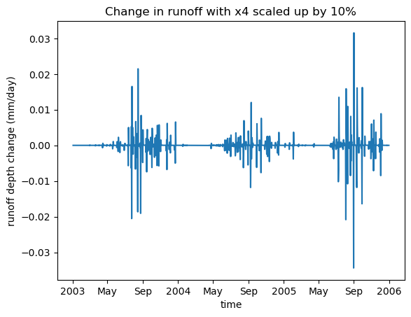
Calibration¶
Let's now set up a calibration against the observed runoff depth for this data 'MMH', included as sample data in the package, and view it along the current default model runoff output.
Negative data in the observed streamflow is a code for missing data. It is better to use np.nan in Python for this.
Let's view the default modelled output from GR4J, overlayed with the observation
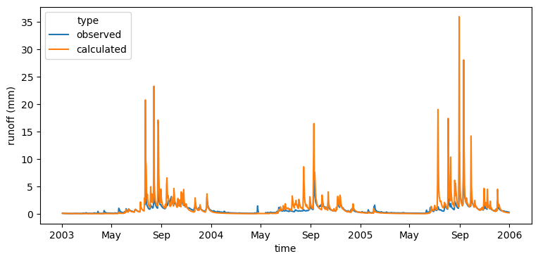
Defining the calibration¶
Before we go ahead in setting up this calibration, it is worth outlining key aspects of software architecture in swift2 and its metaheuristics optimisation library, "wila" upfront.
At a high level a calibration process conceptually needs:
- the specification of a feasible parameter space \(X = x_1, x_2, ..., x_n\), typically with feasible intervals for each \(x_i\)
- an objective evaluation \(Obj(X)\)
- and an optimisation algorithm that uses \(Obj\) and evaluates it on parameter values \(X_p\) sampled from \(X\)
Formulating a calibration in swift2 follows this pattern. There is usually no need to explicitely handle the hydrological model, which is hidden behind \(Obj\), and for some reasons this can be an unfamiliar viewpoint for many hydrologist.
Readers interesting in modelling and optimisation framework design and implementation can read Talbi, El-Ghazali. Metaheuristics: from design to implementation. John Wiley & Sons, 2009. for a comprehensive overview.
Now let us see what these are in practice.
Note: There are several time stamp representations in the Python ecosystem. A dependency package of the swift2 package , cinterop, has a time series module with date-time and time series related utilities, such as xr_ts_start, as_timestamp to reduce the tedium of date-time handling. You may also already be using third-party utilities as well.
Objective¶
Part of the information for the objective is over which time span we calculate the goodness of fit, usually different from the simulation length to leave period for a model warmup
s = xr_ts_start(obs_runoff)
# Warmup:
w = as_timestamp(s) + pd.DateOffset(years=2)
e = xr_ts_end(obs_runoff)
ms.set_simulation_span(s, e)
We now have all the information needed to create a calibration objective using for instance the Nash-Sutcliffe Efficiency
The variable objective now references an objective evaluator.
(swift2.classes.ObjectiveEvaluator,
CFFI pointer handle to a native pointer of type id "OBJECTIVE_EVALUATOR_WILA_PTR")
An objective evaluator evaluates one or more goodness of fit (a.k.a. "scores") via the method objective.get_score. We need to provide a set of model parameters to evaluate the resulting scores. The utility function get_free_params provides a template for some models including GR4J, in the form of a pandas DataFrame
Feasible parameter space¶
| Name | Value | Min | Max | |
|---|---|---|---|---|
| 0 | x1 | 650.488000 | 1.0 | 3000.0 |
| 1 | x2 | -0.280648 | -27.0 | 27.0 |
| 2 | x3 | 7.891230 | 1.0 | 660.0 |
| 3 | x4 | 18.917200 | 1.0 | 240.0 |
We can set some values and min/max bounds in this data frame. The min/max bounds are important for the upcoming calibration process.
pspec_gr4j.Value = [542.1981111, -0.4127542, 7.7403390 , 1.2388548]
pspec_gr4j.Min = [1,-30, 1,1]
pspec_gr4j.Max = [1000.0, 30, 1000, 240]
| Name | Value | Min | Max | |
|---|---|---|---|---|
| 0 | x1 | 542.198111 | 1 | 1000.0 |
| 1 | x2 | -0.412754 | -30 | 30.0 |
| 2 | x3 | 7.740339 | 1 | 1000.0 |
| 3 | x4 | 1.238855 | 1 | 240.0 |
Our model states have the prefix 'subarea.Subarea.', so we need to use this prefix in our data frame of parameters as well.
We can now create a parameteriser. It can be converted back to a data frame to check its content.
Note: we will be using the untransformed parameters for calibration for the sake of simplicity in this introductory material. In practice we should use some transformations to facilitate the calibration, and there are many features in swift2 to do so.
| Name | Value | Min | Max | |
|---|---|---|---|---|
| 0 | subarea.Subarea.x1 | 542.198111 | 1.0 | 1000.0 |
| 1 | subarea.Subarea.x2 | -0.412754 | -30.0 | 30.0 |
| 2 | subarea.Subarea.x3 | 7.740339 | 1.0 | 1000.0 |
| 3 | subarea.Subarea.x4 | 1.238855 | 1.0 | 240.0 |
Now let us check that we can indeed evaluate the goodness of fit for this parameteriser p using the objective:
{'scores': {'NSE': -2.3381787784819057},
'sysconfig': Name Value Min Max
0 subarea.Subarea.x1 542.198111 1.0 1000.0
1 subarea.Subarea.x2 -0.412754 -30.0 30.0
2 subarea.Subarea.x3 7.740339 1.0 1000.0
3 subarea.Subarea.x4 1.238855 1.0 240.0}
Our calibration objective calculator is structurally valid.
Optimiser¶
To create an optimiser, we need to specify a termination criterion. There are several options available to control when an optimisation process will finish in a calibration. One of them uses the standard deviation of parameter values for population based algorithms such as the shuffled complex evolution algorithm (SCE). We can specify that the optimisation has converged once the standard deviation of each parameter (x1, x2, etc. for GR4J) is within
sce_params = get_default_sce_parameters()
urs = create_parameter_sampler(0, p, 'urs')
optimiser = objective.create_sce_optim_swift(term, sce_params, urs)
CPU times: user 21.7 s, sys: 42.8 ms, total: 21.7 s
Wall time: 4.31 s
swift uses optimization tools that will parallelize model simulation runs if possible (i.e. if supported by the model). This may not be noticeable in this instance, but is important to scale up to larger catchment models.
Assessing the optimisation¶
There are facilities in the package to extract, exploit and visualise the optimisation log information.
| Category | CurrentShuffle | Message | NSE | subarea.Subarea.x1 | subarea.Subarea.x2 | subarea.Subarea.x3 | subarea.Subarea.x4 | PointNumber | |
|---|---|---|---|---|---|---|---|---|---|
| 0 | Initial Population | Initial Population | -1339.285380 | 947.690750 | 23.005202 | 62.217181 | 161.886443 | 1 | |
| 1 | Initial Population | Initial Population | -0.890844 | 174.551633 | -7.280393 | 710.469274 | 96.390541 | 2 | |
| 2 | Initial Population | Initial Population | -0.327150 | 214.709001 | -7.069954 | 124.638641 | 18.990489 | 3 | |
| 3 | Initial Population | Initial Population | -2.367463 | 724.720289 | 6.659042 | 930.609993 | 207.726829 | 4 | |
| 4 | Initial Population | Initial Population | -913.046415 | 874.130073 | 28.643820 | 126.360349 | 83.693269 | 5 |
| Category | CurrentShuffle | Message | NSE | subarea.Subarea.x1 | subarea.Subarea.x2 | subarea.Subarea.x3 | subarea.Subarea.x4 | PointNumber | |
|---|---|---|---|---|---|---|---|---|---|
| 13967 | Shuffling No 28 | Shuffling No 28 | 0.768667 | 999.096491 | -5.620413 | 91.829530 | 1.000574 | 13968 | |
| 13968 | Shuffling No 28 | Shuffling No 28 | 0.768742 | 996.688456 | -5.679336 | 93.670035 | 1.000339 | 13969 | |
| 13969 | Shuffling No 28 | Shuffling No 28 | 0.768590 | 995.813747 | -5.731252 | 95.427583 | 1.000443 | 13970 | |
| 13970 | Shuffling No 28 | Shuffling No 28 | 0.768553 | 994.549300 | -5.677011 | 96.570436 | 1.000202 | 13971 | |
| 13971 | Shuffling No 28 | Best point in shuffle | 0.768844 | 997.616573 | -5.649821 | 92.890522 | 1.000003 | 13972 |
Let's subset the data points to keep a subset, the points from the initial population and SCE geometric transformations (reflection, contraction, addition). We can use a regular expression pattern to do so. MhData is a glorified data frame, but its methods are handy to reduce tedium.
geom_ops = opt_log.subset_by_message(pattern= 'Initial.*|Reflec.*|Contrac.*|Add.*') # same as default argument, but to be explicit
Let us also rename the column names without the fully qualified prefix
p_var_ids = ['x1','x2','x3','x4']
remap = {f'subarea.Subarea.{name}': name for name in p_var_ids}
geom_ops.rename_columns(remap)
Visualising the optimisation process¶
We can see that at least one of the parameters, namely "x1", settled at its upper boundary of 1000:
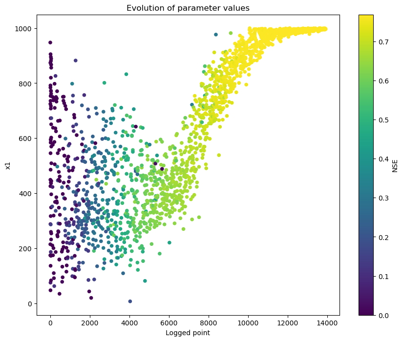
Note that the parameter x4 also seems to have settled at its lower bound:
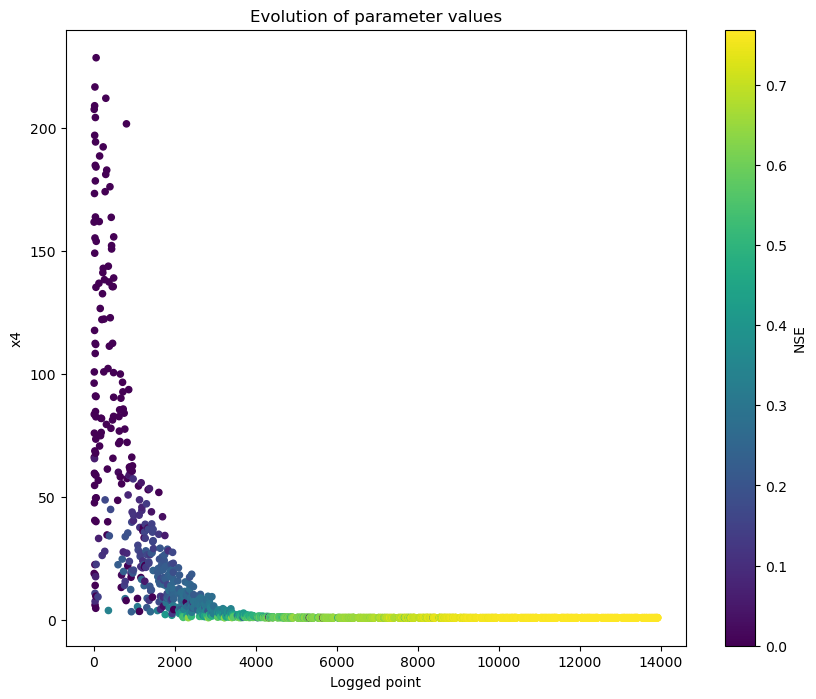
x4 influences the unit hydrograph, and the meaning of this parameter depends on the time step of the input series. It may be justified in this case to go below 1 for its lower bound. Also, the default maximum value 240 is typically sensible for use with hourly data, not daily, so we may want to reduce this maximum.
So let's restart the calibration, with a larger upper bound for the x1 parameter, and adjusted x4 bounds as well:
p = create_parameteriser('Generic', pspec_gr4j)
urs = create_parameter_sampler(0, p, 'urs')
optimiser = objective.create_sce_optim_swift(term, sce_params, urs)
calib_logger = optimiser.set_calibration_logger('')
calib_results = optimiser.execute_optimisation()
opt_log = optimiser.extract_optimisation_log(fitness_name = "NSE")
geom_ops = opt_log.subset_by_message(pattern= 'Initial.*|Reflec.*|Contrac.*|Add.*') # same as default argument, but to be explicit
p_var_ids = ['x1','x2','x3','x4']
remap = {f'subarea.Subarea.{name}': name for name in p_var_ids}
geom_ops.rename_columns(remap)
Let's check that the parameter does not settle at the boundary anymore:
v = OptimisationPlots(geom_ops)
g = v.parameter_evolution(p_var_ids[0], obj_lims=[0,1])
plt.gcf().set_size_inches(10,8);
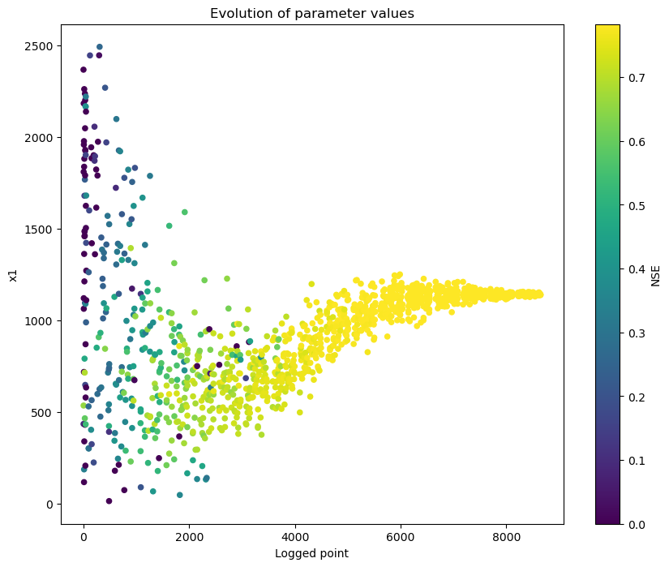
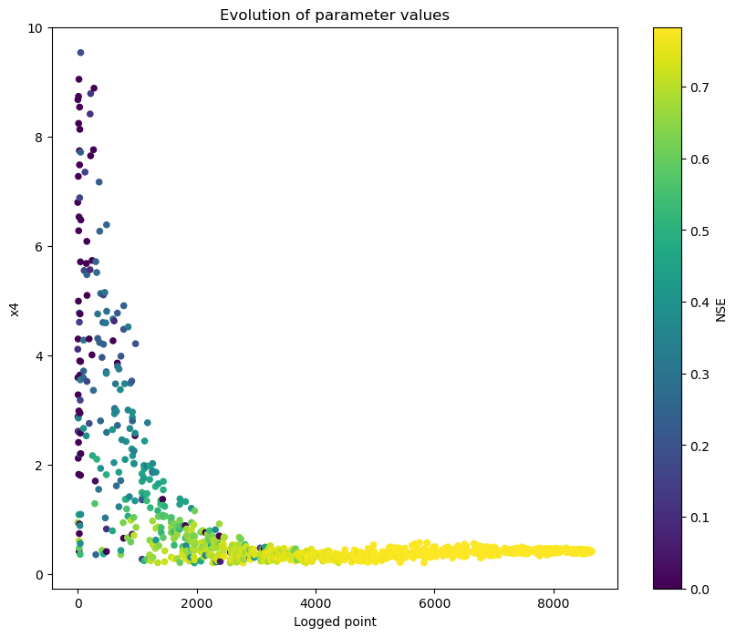
Note: There are a few additional visualisation options in the R package mhplot that may be ported to python as needed.
We can inspect further the behavior of the SCE optimiser by using facetted plots with the package seaborn.
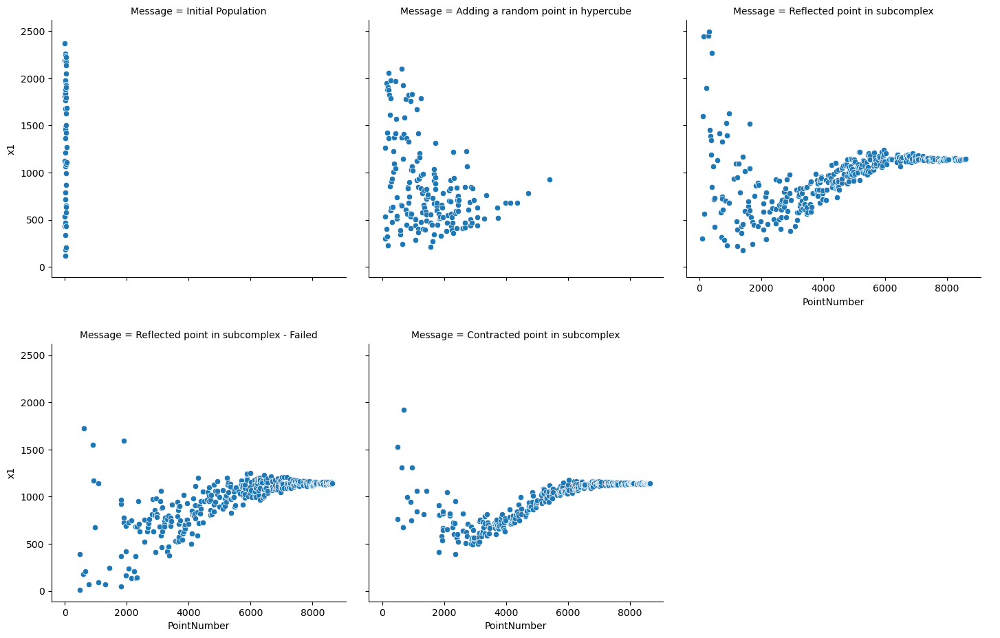
Let's retrieve the parameter set with the best NSE, and see the resulting runoff time series. calib_results is a native C++ object, but its wrapper has functions to query it and extract the information wanted.
calib_results is the final population of parameter sets. To get the best score within it (i.e. the best fitness and associated parameters), we can use:
CFFI pointer handle to a native pointer of type id "OBJECTIVE_SCORES_WILA_PTR"
Scores:
{'NSE': 0.7832225081975563}
Parameters:
Name Value Min Max
0 subarea.Subarea.x1 1141.419555 1.0 2500.0
1 subarea.Subarea.x2 -5.448833 -30.0 30.0
2 subarea.Subarea.x3 97.579250 1.0 1000.0
3 subarea.Subarea.x4 0.414422 0.2 10.0
| Category | CurrentShuffle | Message | NSE | subarea.Subarea.x1 | subarea.Subarea.x2 | subarea.Subarea.x3 | subarea.Subarea.x4 | PointNumber | |
|---|---|---|---|---|---|---|---|---|---|
| 8697 | Shuffling No 17 | Shuffling No 17 | 0.783221 | 1136.271566 | -5.462186 | 97.798741 | 0.425679 | 8698 | |
| 8698 | Shuffling No 17 | Shuffling No 17 | 0.783220 | 1140.838174 | -5.423250 | 97.721428 | 0.397216 | 8699 | |
| 8699 | Shuffling No 17 | Shuffling No 17 | 0.783218 | 1138.591759 | -5.473618 | 98.148408 | 0.418075 | 8700 | |
| 8700 | Shuffling No 17 | Shuffling No 17 | 0.783215 | 1151.965067 | -5.400726 | 96.862435 | 0.463490 | 8701 | |
| 8701 | Shuffling No 17 | Best point in shuffle | 0.783223 | 1141.419555 | -5.448833 | 97.579250 | 0.414422 | 8702 |
Time series visualisation¶
Let's apply this parameter to the original simulation, and execute it to get output runoff.
Note, as an aside, that below for didactic purposes we see only the last 3 years of time series, while the NSE score is calculated over several more years. As it happens, the runoff prediction has a systematic negative bias over these three particular years.
best_pset.apply_sys_config(ms)
ms.exec_simulation()
plot_obs_vs_calc(obs_runoff, ms.get_recorded(runoff_id).squeeze(drop=True))
plt.show()
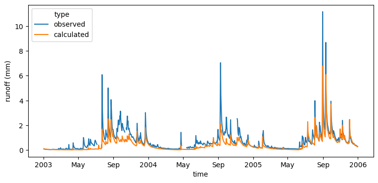
Looking at the whole series over the simulation, indeed these last three years appear untypical in terms of match between observed and calculated
plot_two_series(obs_runoff, ms.get_recorded(runoff_id).squeeze(drop=True), names = ['observed','calculated'])